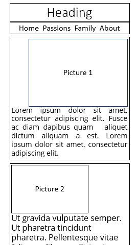
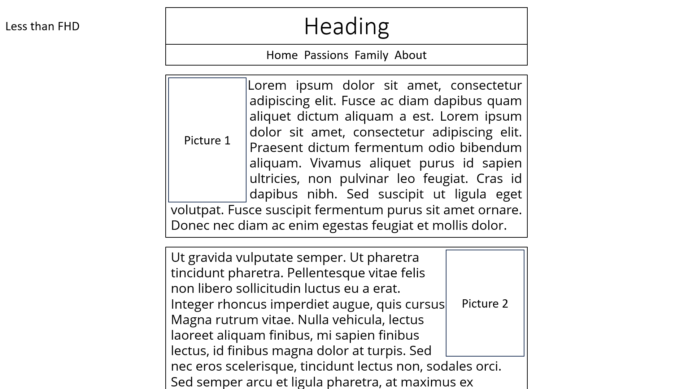

The portfolio was created as part of the Vanier College program Web and Database Programming I attented.
In the portfolio I talk about my parcours, my passions and my family.
I wanted to do a portfolio that everyone can view it even in smartphone and big screen.
There is the wireframe I did for creating the portfolio.
Why did I chose this program at Vanier?
Since I was fourteen years old I was passionate with computer, technologies, gaming and programming.
After highschool I finaly chose another path: cabinetmaker.
I was loving it but not enough so I finaly stopped it, one of the reason was an accident.
Since then I was wondering if I should go back to school and then a friend of my beautiful girlfriend
was in the program at Vanier in the evening and recommended it to me.
The evening program was perfect for me since I work all days week.

Wireframe
Before building the website, I did some wireframes for it.
I opted for something simple with softly rounded boxes.
I also wanted multiple view to work with either smaller screen like phone and bigger one like 4k screen.

For the the FHD to 4k screen I added background pictures on the sides for the passions page.
Colors Schemes
Since the blue color is beautiful, I opted for Hawkes Blue with is complementary color Bisque.
For the page title's background I opted for Bright Grey.
And for the navigation bar's accent color I opted for Navy Blue.
I do think that all of them together is a good choice of color.